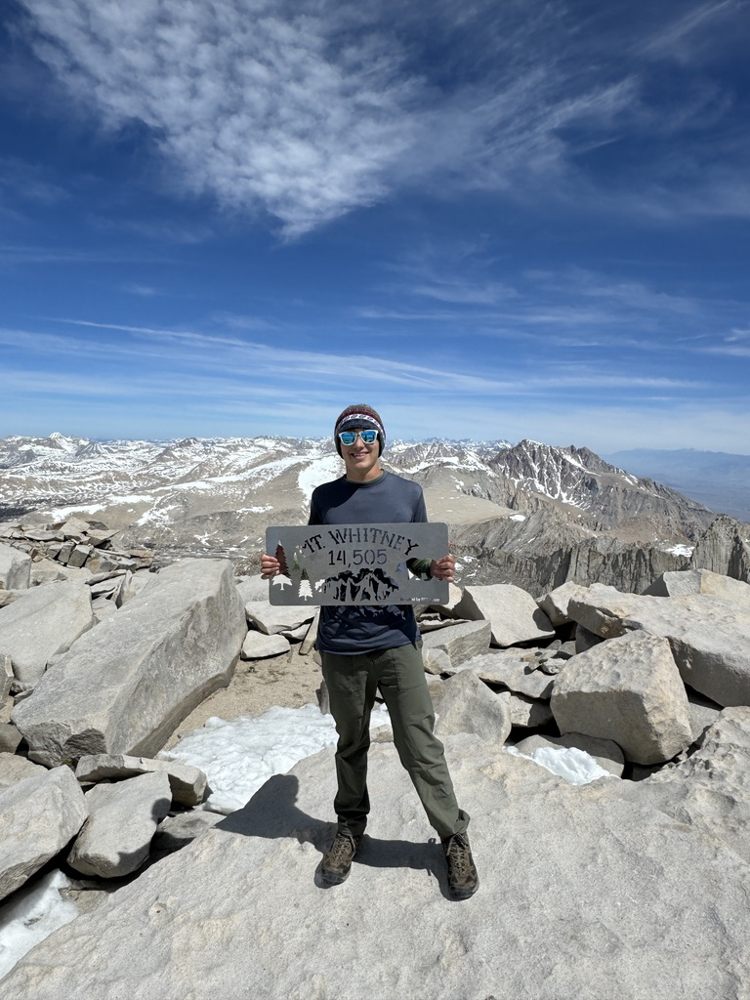
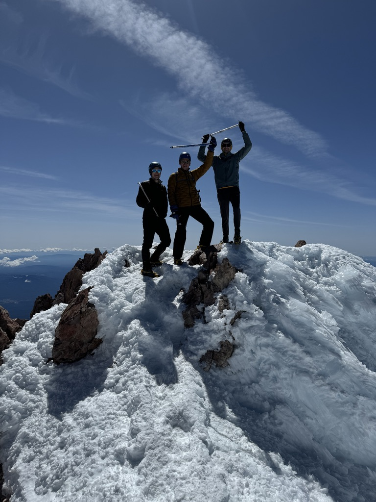
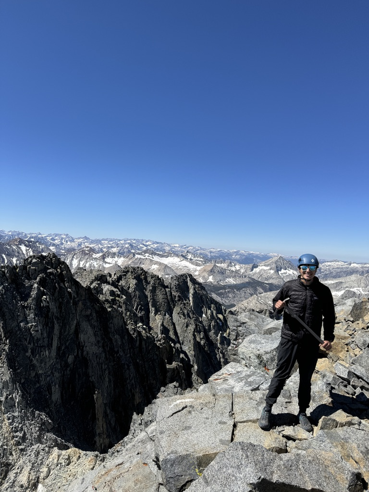
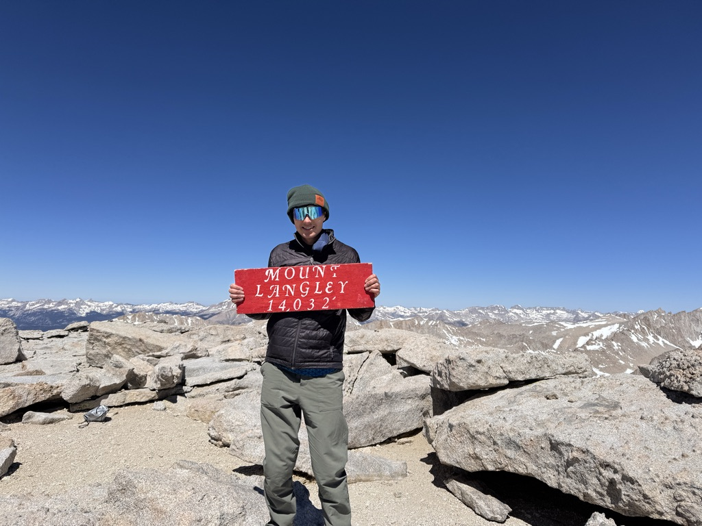

Beyond Engineering
Outside of engineering I love staying active and getting outdoors. I enjoy running, biking, backpacking, climbing, canyoneering, and skiing. I was initially introduced to the outdoors through my involvement with Scouts of America where I earned the rank of Eagle Scout. I continue to show leadership outdoors by planning backpacking and ski trips for my fraternity and leading other students outside with ORGT.
ORGT (Outdoor Recreation at GT)
Canyoneering
Since spring 2022 I have been an active member of ORGT, a student organization at Georgia Tech that focuses on teaching other students outdoor skills and sports to enhance their college experience and promote conservation.
With ORGT I am involved with our version of canyoneering which we call "Cascading" due to the lack of canyons in the southeast. Within cascading I have taught GT students Canyoneering skills such as rappelling, knot tying, anchor building, and leave no trace principles.
Over the past 2 summers I spent in Los Angeles, I have made it my goal to climb as many of the California 14ers (mountains over 14,000 feet) as possible. These mountains span a wide range of difficulties from long Class 1 hikes to exposed Class 5 alpine climbs. Over the past 2 summers I have managed to climb 4 of the 14 14ers. I also made an unsuccessful summit attempt of mount Sill. Over the next few years I hope to tag the remaining class class 1, 2, and 3 peaks as well as improve my climbing skills to eventually be able to attempt the class 4 and 5 peaks.
| Peak | Climbed | Difficulty | Summit Photo |
|---|---|---|---|
| Mount Whitney | Class 1 |  | |
| Mount Shasta | Class 2/3 |  | |
| Split Mountain | Class 2 (took class 3 route) |  | |
| Mount Langley | Class 1 |  | |
| Mount Tyndall | Class 2/3 | ||
| Mount Williamson | Class 3 | ||
| North Palisade | Class 4 | ||
| Mount Sill | Class 2 | ||
| Polemonium Peak | Class 4 | ||
| Starlight Peak | Class 5 | ||
| Thunderbolt Peak | Class 5 | ||
| White Mountain Peak | Class 1 |